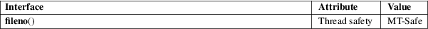

fileno − obtain file descriptor of a stdio stream
Standard C library (libc, −lc)
#include <stdio.h>
int fileno(FILE *stream);
Feature Test Macro Requirements for glibc (see feature_test_macros(7)):
fileno():
_POSIX_C_SOURCE
The function fileno() examines the argument stream and returns the integer file descriptor used to implement this stream. The file descriptor is still owned by stream and will be closed when fclose(3) is called. Duplicate the file descriptor with dup(2) before passing it to code that might close it.
For the nonlocking counterpart, see unlocked_stdio(3).
On success, fileno() returns the file descriptor associated with stream. On failure, −1 is returned and errno is set to indicate the error.
|
EBADF |
stream is not associated with a file. |
For an explanation of the terms used in this section, see attributes(7).

POSIX.1-2008.
POSIX.1-2001.
open(2), fdopen(3), stdio(3), unlocked_stdio(3)